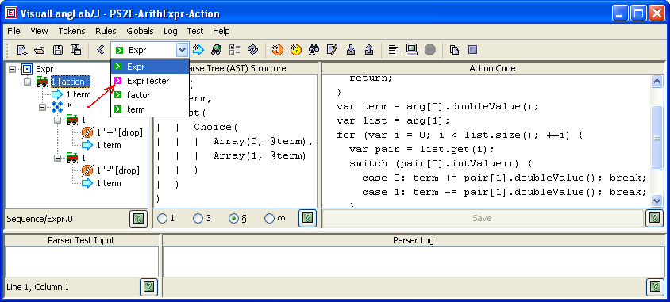

VisualLangLab is a visual parser-generator IDE for developing parsers without code or scripts of any kind. Parser-rules are depicted as visual grammar-trees with intuitive icons for different nodes types. The following figures show how it represents some rules of the payroll-parser external DSL described on page 233 of Programming Scala. The parser code can also be found online at A Scala Implementation of the External DSL Grammar.
| amount | deductKind | deduct | deductItems |
|---|---|---|---|
|
|
|
The grammar-trees are executable, and can be run at any time at the click of a button. No other skills or tools are needed. This simplifies testing, promotes an iterative-incremental development process, and speeds up development manyfold.
The grammar is saved as a XML file that can be reloaded for further editing and testing. An API enables client programs (Scala or Java) to load the XML file and regenerate the parser.
Each grammar-tree is a parser. There is no generated-code or other underlying code representation. VisualLangLab uses Scala's parser combinator functions to turn each grammar-tree directly into a Parser at run-time as needed. Parser generation is therefore much faster than a code-based approach.
In this tutorial we recreate the payroll DSL using VisualLangLab, highlighting its features for parser development and testing.
| Some Essential Jargon |
|---|
|
To run VisualLangLab, just download VLLS-All.jar and double-click it in a file-browser. Linux and UNIX users will have to enable execution (chmod +x ...) first. The only prerequisite is a JRE 6.0+ installation. You should see the GUI in Figure-? below. The menus and buttons are explained as needed.

Figure-?. The VisualLangLab GUI
Another file, VLLS.zip, which contains the documentation files, sample grammars, etc. should also be downloaded.
The parser code is organized in top-down fashion, with the high-level structures at the top, and the simple structures at the bottom. In this tutorial, however, we will start at the bottom, with doubleNumber, and work our way up through progressively larger structures till we reach the top-level parser payCheck. The following sub-sections hand-hold you through the first few (last few actually) parsers.
Your first step is to import the tokens in JavaTokenParsers, and VisualLangLab
provides a corresponding token library containing these tokens.
Select Tokens -> Import tokens from the main menu, or click the Import tokens
( ) button, and choose the file
grammars/TL-JavaTokenParsers.vll from the contents of VLLS.zip.
) button, and choose the file
grammars/TL-JavaTokenParsers.vll from the contents of VLLS.zip.
Also note that because of differences between Scala's RegexParsers
and VisualLangLab's internal lexer, we shall be substituting the
token decimalNumber wherever floatingPointNumber was used
in the original code.
Create the new rule by clicking the New rule
button ( ), and entering
the rule name (doubleNumber) into the Dialog box presented.
Clicking the OK button creates a new rule with just the Root node.
Now right-click the Root node, and select Add -> Token from the popup
context-menu. Another Dialog with all the known token names is presented.
Select decimalNumber and click the ok button.
), and entering
the rule name (doubleNumber) into the Dialog box presented.
Clicking the OK button creates a new rule with just the Root node.
Now right-click the Root node, and select Add -> Token from the popup
context-menu. Another Dialog with all the known token names is presented.
Select decimalNumber and click the ok button.
As mentioned above, we will modifying this parser definition, and implementing it as the following line instead.
def doubleNumber = decimalNumber
This parser contains just one node: the decimalNumber token.

Figure-?. The doubleNumber parser
The doubleNumber parser ...
This parser uses a Choice
(the  icon) as its top-level node.
icon) as its top-level node.

Figure-?. The toBe parser
The toBe parser ...
This parser uses a Sequence
(the  icon) as its top-level node.
icon) as its top-level node.
Figure-?. The amount parser
The amount parser ...
A full section on testing comes later, this section demonstrates the simplicity and power of VisualLangLab's manual testing facilities. It shows how you can effortlessly validate every little addition or change without using or learning any other skills or tools. To manually test a parser-rule proceed as follows.
The first two lines of output contain performance information that should be ignored (not part of the parser's result).
Figure-? below shows doubleNumber being validated.

Figure-?. Testing the doubleNumber parser
If you do not see any red text (as in Figure-? below) in the Parser Log area, your parser executed without run-time errors. But that alone is not enough, you should verify that the result returned (for example, 25.5 in Figure-?) is the value expected.
Before you start to enter test data for toBe take a moment to understand
the structure of its output. All parser rules return an
abstract syntax tree (or AST)
whose structure depends on the arrangement and properties of the grammar-tree's constituent nodes
as explained here.
The text area under Parse Tree (AST) Structure also displays the expected AST
structure of the selected grammar-tree node. Figure-? below tells you that the returned
result is one of two scala.Pair objects (depending on what was found in the input).

Figure-?. The AST of the toBe parser rule
Figure-? below shows the result of exercising toBe with three different inputs: is, are, and other.
 |
 |
 |
| Figure-?. Validating toBe with different inputs |
The performance data in the two lines preceding the parser's result can be safely ignored. The first run is typically much slower than subsequent runs possibly due to JVM warmup effects.
All of the remaining parsers, except one that uses a repsep and
is described fully below, present no new difficulties. We therfore skip the
details and just show you how they look. If you have understood how the parsers
described above were created, you should be able to create the remaining ones
yourself. If you don't have the time, just open the file payroll-parser-comb-v1.vll
available in the grammars directory of the distribution
(VLLS.zip).
As before, we continue northward.
 |  |  |  |
None of these grammar-rules have anything special or new, so if you are using VisualLangLab as you read the article, observe (and possibly try) some of it's features. You should also try to validate some of the grammar-trees with your own data.
 |  |  |
Remember that the grammar-trees are the parser. There is no generated-code or intermediate-code. VisualLangLab uses Scala's parser combinator functions to turn the grammar-tree directly into a Parser at run-time without compiling any code. That is why the displayed parser-rule runs almost immediately when the Parse input button is clicked.
 |  |  | |
When you finish developing and testing a parser (or when work must be suspended temorarily) the parser can be saved to a file by invoking File -> Save from the main menu. The saved grammar file has a .vll extension, and contains only an XML representation of all the data entered into the GUI (but no other data, code or serialized Scala objects). A saved grammar can be opened again later for review, testing, or further modification by invoking File -> Open from the main menu.
 |  |  |
The remaining parsers ...
This parser uses a RepSep
(the  icon) as its top-level node.
icon) as its top-level node.

Figure-?. The deductItems parser
As mentioned above, we will modifying this parser definition, and implementing it as the following line instead.
approach to automated testing.
Testing is much simpler in VisualLangLab than in almost every other tool. Testing - A Short Detour showed how effective ad hoc manual testing can be in certain situations. VisualLangLab also supports automated testing, and the following sections describe two different approaches for different situations.
This approach uses an additional parser-rule to wrap the main (or top-level) parser-rule with before and after scripts. The before script sets up initial conditions before the main parser-rule is invoked, and the after script validates the parse-tree returned by the main parser-rule. Figure-? below shows details of the wrapper rule used for testing. To display the before and after scripts (actually parts of a single action-code function) you must select the Reference node that points to the Paycheck parser-rule.

Figure-?. Wrapper rule for automated testing
The Scala function with the before and after scripts is reproduced below for clarity. The setup code deposits a few lines of test input (from here in the OFPS version of Programming Scala) into the Parser Test Input area. These lines are processed as input when the main parser-rule runs. The test part of the code checks the structure of the parse-tree returned by the main parser, and prints out an appropriate message.
(arg: Any) => arg match {
//****************************************
// SETUP actions
//****************************************
case null =>
ParserTestInput.text =
"""|paycheck for employee "Buck Trends"
|is salary for 2 weeks minus deductions for {
|federal income tax is 25. percent of gross,
|state income tax is 5. percent of gross,
|insurance premiums are 500. in gross currency,
|retirement fund contributions are 10. percent of gross
|}""".stripMargin
//****************************************
// TEST actions
//****************************************
case Array(empl, gross: Array[_], deduct) =>
Array(
if (empl == "\"Buck Trends\"")
"OK"
else
"BAD empl (%s)".format(empl),
gross match {
case Array("2", Pair(0, "weeks")) => "OK"
case _ => "BAD gross (%s)".format(gross.mkString(", "))
},
deduct match {
case List((0,"25."), (0,"5."), (1,"500."), (0,"10.")) => "OK"
case _ => "BAD deduct (%s)".format(deduct)
}
).mkString(", ")
case _ => "BAD AST structure"
}
To understand how this works, let's run it a few times with and
without changes to the test input. The underlined part is the
changed text (in the table). To run the test after making changes
in the action-code click the Save button and wait for
a pop-up dialog to confirm that the change was accepted, click
the pop-up's OK button, and then click the Parse input
( ) button.
) button.
| Input Changes | Result |
|---|---|
| No changes | OK, OK, OK |
| ... employee "Duck Trends" ... | BAD empl ("Duck Trends"), OK, OK |
| ... salary for 22 weeks minus ... | OK, BAD gross (22, (0,weeks)), OK |
| ... premiums are 900. in ... | OK, OK, BAD deduct (List((0,25.), (0,5.), (1,900.), (0,10.))) |
Near the top of the script, a value called ParserTestInput is
used. This name is a reference to the GUI's JTextArea
from which the parser under test obtains input (and into
which test input is normally entered manually). More information about
this can be found under
Predefined Variables.
The ease of testing is another important feature of VisualLangLab.
The ease of testing is another important feature of VisualLangLab.